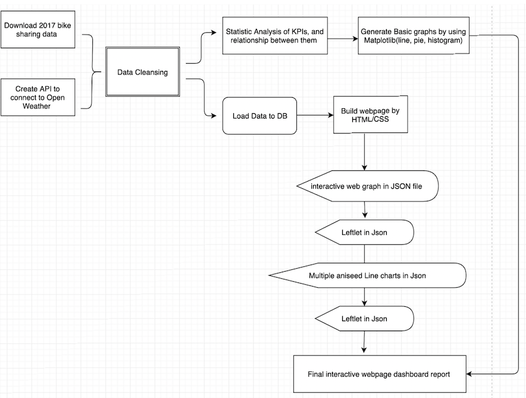

Bike Share Toronto Expansion
Bike Share Toronto announced that due to the incredible popularity of Bike Share Toronto they are expanding their current footprint to add 70 new stations and 700 additional bikes!

It's Greener
As we know that Bike Sharing System is not only convenience for our daily life, but also friendly to our environment.

More and more Bike Share Locations in Toronto
If you are looking for a fun trip, the Bike Sharing System can make navigation in Toronto with two wheels more convenient and flexible!
Project of Exploring Toronto Bike Share Ridership in 2017

Data Clean & Statistic Analysis by Python
Perform ETL by utilizing Python, display data through DataFrame and statistical analysis of different KPIs to understand data.

Load Data to Relational DB
Load clean data to database; Define metadata from the database such as data types, constraints, foreign keys, etc.

Visualize Data with Leaflet
Built a map of Toronto Bike Share Stations. Created additional layers, improved landscape features and tooltips to enhance user experience.
PROJECT WORK FLOW DIAGRAM

INTRODUCTION OF PROJECT
Background:
Nowadays, bike sharing is getting popular. Biking is an enjoyable, environmental and a cost-effective way to get around town while avoiding traffic, subway delays and taxi fares in Toronto. More and more people are using shared rides for their daily work, life and even sightseeing. It’s also convenient for us to return the bike to any docking station when you finish using it.
So it is a meaningful topic for us to understand and analyze Toronto Bike Sharing status, how people use shared bikes such as the relationship between user type, trip duration and distance.
Objective:
- Understand and analyze Toronto Bike Sharing status in 2017
- How people use bike share
- The relationship between trip duration, station's location, top time day and distance
- In the future could manage the system, support a smart-phone to track the station-level information in real time
Chanllenges:
- Raw data file with lan and lon is not geojson, so it can not easily use L.geojson method to read it
- The format of Datetime varies between different files which were hard to convert and calculate
- Only Q1 and Q2 data files contain station IDs, Q3 and Q4 files don't contain station IDs
CONCLUSION
- Who: Casual more than Member

- When: Few bikes are checked out before 5am, and that there are busy times around the rush hour: 8am and 5pm